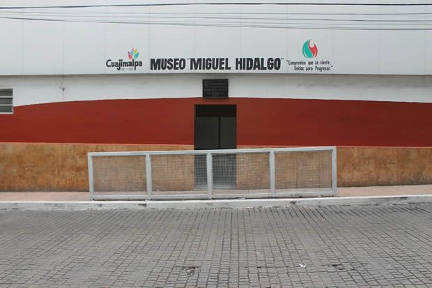

En esta alcaldia solo ubicaremos un total de 3 museos, de entre ellos destaca un museo dedicado a honrar a la máxima leyenda del cine mexicano, Pedro Infante.
Museo Centro Cultural Nacional Pedro Infante
Horarios y costos
martes a viernes de 10:00 a 19:00 hrs.
sábados y domingos de 10:00 a 18:00 hrs.
Entrada libre
Cuajimalpa/Dirección General de Desarrollo Social/Dirección de Cultura Cívica
Av. Juárez s/n esq. Veracruz
Centro
CP 05000
Cuajimalpa De Morelos, Cuajimalpa de Morelos, Ciudad de México
Tels.: (55) 5814 1100 ext. 2212

Museo Miguel Hidalgo
Horarios y costos
Lunes a viernes de 9 a 18 hrs.,
sábados y domingos de 9 a 17 hrs.
Entrada libre.
Alaldía Cuajimalpa de Morelos/Dirección Ejecutiva de Promoción Deportiva y Turismo Social
Av. Juárez s/n esq. Veracruz
Centro
CP 05000
Cuajimalpa De Morelos, Cuajimalpa de Morelos, Ciudad de México
Tels.: 55 7090 4482, 7090 4489
Museo de Sitio del Ex Convento del Desierto de los Leones
Horarios y costos
Abierto al público de martes a domingo de 10 a 17 hrs.
Entrada general: $14
Alcaldía Cuajimalpa/Dirección General de Desarrollo Social
Carr. México-Toluca s/n
Col. La Venta
CP 05020
Cuajimalpa De Morelos, Cuajimalpa de Morelos, Ciudad de México
Tels.: 55 5814 1172